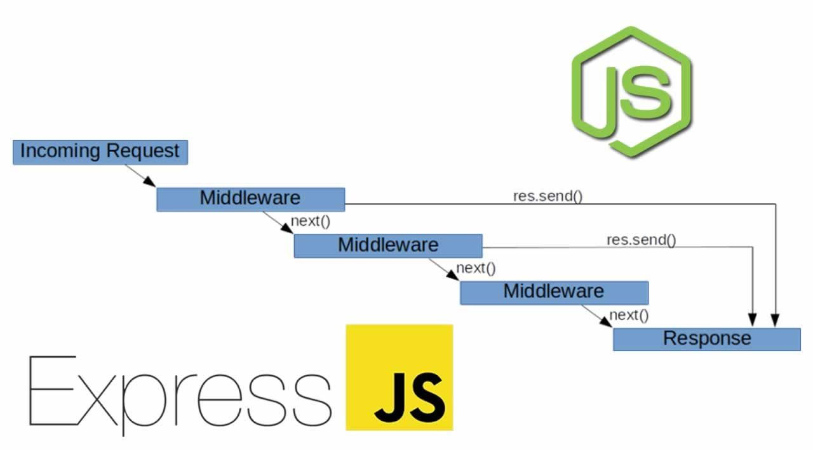
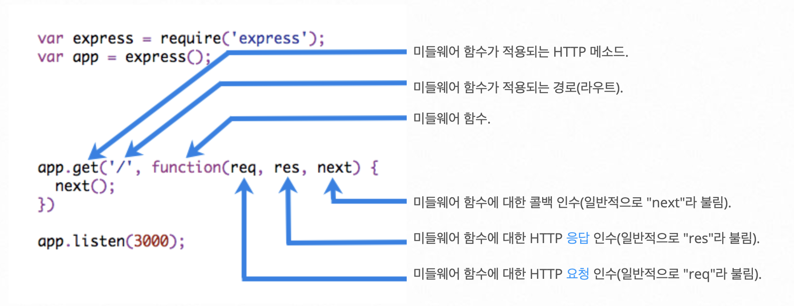

Express Middleware(미들웨어)는 애플리케이션의 요청-응답 주기에서 요청 객체(req), 응답 객체(res), next 함수에 접근할 수 있는 함수이다.
next 함수는 호출될 때 현재 Middleware를 계승하는 Middleware를 실행하는 Express 라우터의 함수이다.
Middleware 함수가 요청-응답 주기를 종료하지 않으면 next() 함수를 호출하여 다음 Middleware 함수에 제어를 전달해야 한다.
그렇지 않으면 요청이 중단된다.

공식 문서에서 확인할 수 있는 Middleware의 구성은 아래와 같다.

미들웨어 기능을 사용하기 위해서는 app.use()를 호출하여 미들웨어를 등록해야 한다.
app.use(<middleware>)
미들웨어 기능은 순차적으로 실행되기 때문에 미들웨어 포함 순서도 중요하다.